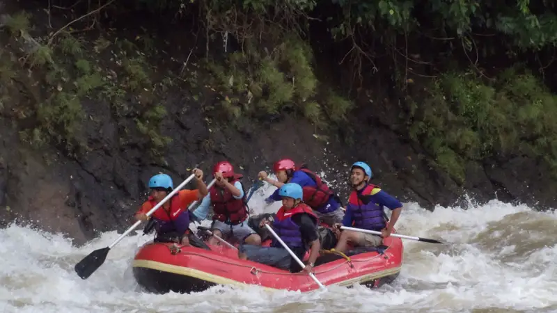

Biaya arung jeram Malang bergantung pada panjang lintasan, jenis paket, jumlah peserta, dan fasilitas, sehingga harga setiap operator dapat bervariasi dan perlu dibandingkan.
- Biaya arung jeram umumnya mencakup perahu, perlengkapan, pemandu, dan transportasi lintasan.
- Harga pasti hanya dapat dipastikan langsung dari operator karena setiap paket berbeda.
- Daerah aliran Sungai Brantas yang luas membuat kondisi operasional dapat berubah mengikuti musim.
- Paket rombongan dan reservasi jauh hari dapat memberi fleksibilitas jadwal dan penawaran.
- Harga termurah belum tentu setara dalam hal perlengkapan dan prosedur keselamatan.
Apa Saja Komponen Biaya Arung Jeram di Malang?
Komponen biaya arung jeram di Malang umumnya mencakup sewa perahu dan perlengkapan, jasa pemandu, transportasi lintasan, serta fasilitas tambahan seperti dokumentasi dan konsumsi.
Sewa perahu karet dan perlengkapan keselamatan menjadi dasar biaya. Perlengkapan itu meliputi pelampung, helm, dan dayung yang harus dirawat serta diganti secara berkala.
Jasa pemandu mencakup tenaga terlatih yang mendampingi setiap perahu. Biaya transportasi lintasan mencakup kendaraan yang membawa peserta dari titik akhir kembali ke titik awal.
Fasilitas tambahan seperti dokumentasi, makan, dan ruang bilas dapat termasuk dalam paket atau dihitung terpisah. Karena itu, rincian tertulis dari operator penting untuk membandingkan penawaran.
Faktor Apa yang Memengaruhi Harga Paket Arung Jeram?
Harga paket arung jeram dipengaruhi panjang lintasan, tingkat kesulitan jeram, musim, ukuran rombongan, dan fasilitas, sehingga angka pasti hanya dapat dipastikan langsung dari operator.
Daerah aliran sungai Brantas mencakup sekitar 11.800 kilometer persegi (sumber: Balai Besar Wilayah Sungai Brantas, data profil wilayah sungai yang dirujuk hingga 2025). Wilayah yang luas ini membuat curah hujan di hulu dapat memengaruhi debit di lokasi arung jeram, sehingga jadwal operasional dapat berubah.
Panjang lintasan dan kelas jeram memengaruhi jumlah pemandu, waktu, dan kebutuhan perlengkapan. Lintasan yang lebih panjang atau lebih menantang umumnya membutuhkan persiapan lebih besar.
Musim dan hari kunjungan juga berperan. Operator dapat menetapkan harga berbeda pada akhir pekan, hari libur, atau musim ramai, dan kebijakannya bervariasi antaroperator.
Apa yang Biasanya Termasuk dan Tidak Termasuk dalam Paket?
Paket arung jeram umumnya sudah termasuk perahu, perlengkapan keselamatan, dan pemandu, sedangkan konsumsi, dokumentasi, dan transportasi dari kota dapat menjadi biaya terpisah tergantung operator.
Peserta sebaiknya meminta daftar inklusi dan eksklusi secara tertulis. Daftar ini mencegah salah paham ketika tiba di lokasi.
Hal yang sering menimbulkan pertanyaan adalah asuransi, tiket masuk kawasan, dan sewa perlengkapan tambahan seperti sepatu atau kantong kedap air. Tanyakan satu per satu agar tidak ada biaya mengejutkan.
Jika operator menawarkan paket dengan makan, tanyakan juga menu, waktu, dan lokasi makan. Detail ini membantu peserta menilai kesesuaian harga dengan layanan.
Bagaimana Perbedaan Paket Perorangan dan Paket Rombongan?
Paket perorangan cocok bagi peserta yang bergabung dengan kelompok lain, sedangkan paket rombongan dapat memberi perahu khusus dan jadwal fleksibel sesuai kesepakatan dengan operator.
Paket perorangan biasanya lebih sederhana dan mengikuti jadwal operator. Peserta bergabung ke perahu bersama orang lain yang belum dikenal.
Paket rombongan lebih cocok untuk keluarga besar, kantor, atau komunitas yang ingin berada dalam satu perahu atau satu sesi. Operator dapat menyesuaikan jadwal, fasilitas, dan format kegiatan.
Rombongan sebaiknya menegosiasikan ketentuan jumlah minimum peserta, kebijakan pembatalan, dan opsi penjadwalan ulang jika cuaca tidak mendukung.
Bagaimana Membandingkan Penawaran dari Beberapa Operator?
Membandingkan penawaran operator arung jeram dilakukan dengan menyamakan lintasan, durasi, perlengkapan, fasilitas, dan kebijakan pembatalan, sehingga selisih harga mencerminkan layanan yang benar-benar setara.
Mulailah dengan meminta rincian yang sama dari semua operator. Misalnya, minta penjelasan panjang lintasan, kelas jeram, jumlah pemandu, dan fasilitas yang termasuk.
Setelah itu, bandingkan secara berdampingan. Selisih harga yang besar perlu ditelusuri sebabnya, apakah dari perlengkapan, layanan tambahan, atau prosedur yang berbeda.
Pertimbangkan juga reputasi operator. Penawaran yang sedikit lebih mahal dengan keterangan jelas sering lebih bernilai daripada penawaran murah dengan detail minim.
Kapan Waktu Memesan yang Membantu Menghemat Biaya?
Waktu pemesanan arung jeram yang tepat bergantung pada musim dan hari kunjungan, karena reservasi jauh hari dan hari kerja sering memberi fleksibilitas jadwal.
Pemesanan jauh hari memberi operator waktu menyiapkan perahu dan pemandu. Rombongan juga memiliki ruang untuk bernegosiasi paket.
Kunjungan pada hari kerja umumnya lebih longgar dibanding akhir pekan atau musim libur. Namun, ketersediaan dan kebijakan harga tetap berbeda antaroperator.
Hindari memesan terlalu mepet pada musim hujan tanpa kebijakan penjadwalan ulang yang jelas. Debit sungai dapat berubah dan memengaruhi keputusan operator.
Biaya Tersembunyi Apa yang Perlu Diwaspadai?
Biaya tersembunyi dalam paket arung jeram dapat berupa tiket masuk kawasan, sewa perlengkapan tambahan, parkir, ongkos antar jemput, dan pembatalan, sehingga rincian tertulis perlu diminta.
Tiket masuk kawasan wisata dan biaya parkir kerap tidak tercantum dalam harga paket. Peserta yang membawa kendaraan pribadi perlu menanyakannya sejak awal.
Biaya pembatalan juga perlu dipahami. Tanyakan apakah uang muka dapat dikembalikan atau dijadwalkan ulang jika operator menunda kegiatan karena cuaca.
Permintaan tambahan seperti foto atau video, tempat bilas, dan konsumsi dapat menambah total biaya. Jumlahkan semua komponen sebelum memutuskan.
Mengapa Harga Murah Tidak Selalu Pilihan Tepat?
Harga termurah tidak selalu pilihan tepat untuk arung jeram karena selisih biaya dapat berasal dari perlengkapan, jumlah pemandu, atau prosedur keselamatan yang dikurangi.
Arung jeram melibatkan risiko nyata, sehingga penghematan pada aspek keselamatan tidak sebanding dengan potensi kerugiannya. Perlengkapan yang usang dan pemandu minim pengalaman sulit terlihat dari harga saja.
Penghematan yang bijak dilakukan melalui pemesanan rombongan, pemilihan waktu kunjungan, dan penyesuaian fasilitas tambahan. Aspek keselamatan sebaiknya tidak menjadi bagian yang dikompromikan.
Pembaca dapat membaca panduan memilih operator arung jeram Malang terpercaya untuk menilai kualitas sebelum membandingkan harga. Panduan lengkap sensasi arung jeram Malang juga membantu memahami gambaran pengalaman secara menyeluruh.
FAQ
Apakah harga arung jeram sama di semua operator?
Harga arung jeram tidak sama di semua operator karena panjang lintasan, fasilitas, jumlah pemandu, dan kebijakan musiman berbeda. Karena itu, calon peserta perlu meminta rincian tertulis dari beberapa operator sebelum memutuskan.
Apakah paket rombongan lebih hemat dibanding perorangan?
Paket rombongan dapat memberi fleksibilitas dan peluang negosiasi, tetapi hemat atau tidaknya bergantung pada kebijakan operator. Bandingkan komponen paket, bukan hanya angka akhir, agar perbandingannya setara.
Apakah asuransi sudah termasuk dalam biaya arung jeram?
Asuransi tidak selalu termasuk dalam biaya paket. Tanyakan kepada operator apakah asuransi tersedia, apa saja cakupannya, dan apakah ada biaya tambahan sebelum menyetujui pemesanan.
Arya
penulis artikel yang sudah berpengalaman di dalam dunia wisata outbound Batu Malang.